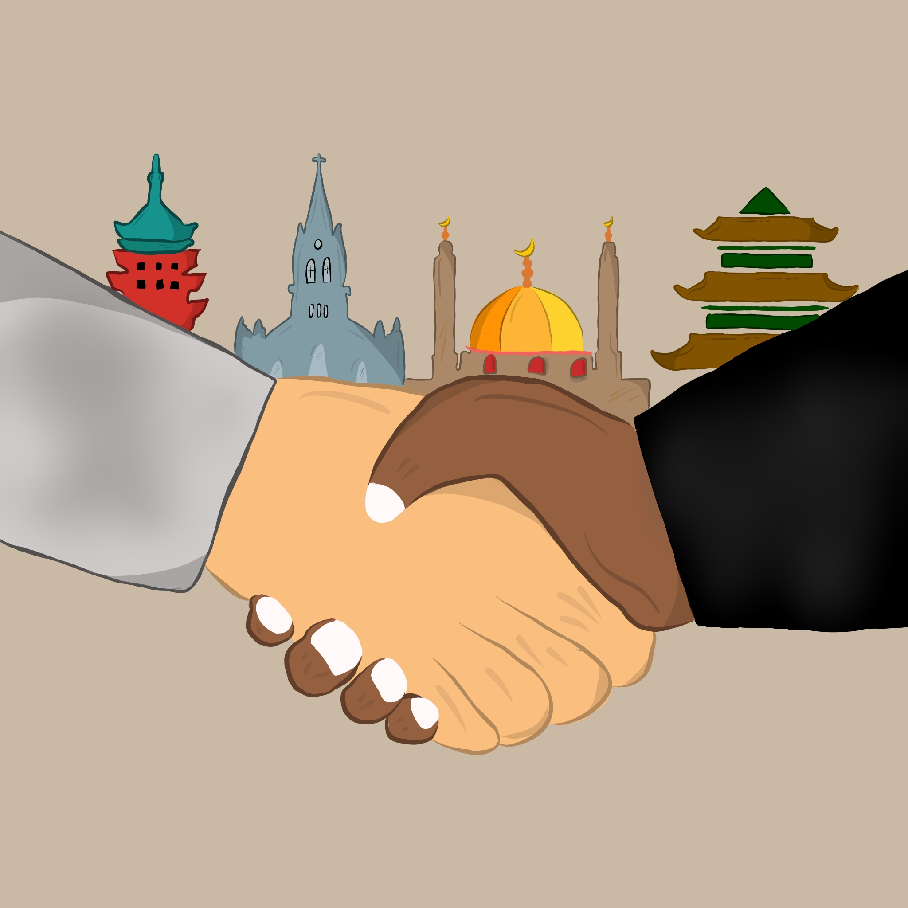

| MENGHARGAI KEBERAGAMAN: TOLERANSI SEBAGAI PONDASI BANGSA INDONESIA |
|---|
|
|---|
Indonesia, negara kepulauan yang kaya akan budaya, suku, agama, dan ras, telah menjadi rumah bagi berbagai kelompok masyarakat yang hidup berdampingan selama berabad-abad. Keberagaman ini bukan hanya sekadar karakteristik, melainkan juga kekayaan yang harus dijaga dan dipelihara dengan penuh penghargaan. Di tengah gejolak globalisasi dan dinamika sosial-politik, penting bagi kita untuk merenung tentang nilai toleransi terhadap keberagaman suku, agama, ras, dan golongan di Indonesia.
| Fondasi Toleransi dalam Sejarah | |
|---|---|
|
Keberagaman suku, agama, ras, dan budaya telah menjadi ciri khas Indonesia sejak zaman kuno. Sebelum masa penjajahan, kepulauan Indonesia dihuni oleh berbagai suku bangsa yang memiliki kepercayaan dan budaya yang beragam. Pada masa itu, interaksi antar-suku sering kali berlangsung dalam bentuk perdagangan, pertukaran budaya, dan perkawinan lintas suku, yang menghasilkan masyarakat yang pluralistik.
|
| Tantangan dalam Masa Kini | |
|---|---|
|
Di tengah gemerlapnya kemajuan dan keberhasilan Indonesia, negara ini juga dihadapkan pada berbagai tantangan yang mengancam keberagaman sebagai pondasi bangsa. Salah satu tantangan utama adalah munculnya gerakan ekstremis agama yang menimbulkan ketegangan antaragama di beberapa wilayah. Ekstremisme tersebut sering kali memicu kekerasan dan intoleransi, merusak kerukunan antarumat beragama. Selain itu, kesenjangan sosial-ekonomi yang masih merajalela juga menjadi sumber ketidakstabilan sosial. Ketidakadilan dalam distribusi sumber daya dan peluang berkontribusi pada ketegangan antarkelompok, memperdalam kesenjangan dan memperkuat ketidaksetaraan. Politik identitas yang memanfaatkan perbedaan suku, agama, dan etnis untuk kepentingan politik sempit juga turut meruncingkan konflik sosial. Kekerasan antaragama, meskipun tidak sebanyak dulu, masih merupakan ancaman yang perlu diwaspadai, mengingat potensi kerusakan yang dapat ditimbulkannya terhadap kerukunan nasional. Selain itu, adanya perbedaan dalam hukum dan kebijakan yang berbasis agama atau budaya seringkali menjadi sumber konflik, ketika implementasinya tidak selaras dengan prinsip-prinsip kesetaraan dan keadilan. Dalam mengatasi tantangan-tantangan ini, kerja sama antara pemerintah, masyarakat sipil, dan lembaga internasional diperlukan. Langkah-langkah seperti pencegahan konflik, pendidikan inklusif, pemberdayaan ekonomi bagi kelompok rentan, serta penegakan hukum yang adil dan berkeadilan menjadi kunci dalam membangun masyarakat yang toleran dan inklusif di Indonesia. |
| Pentingnya Toleransi | ||
|---|---|---|
| 1. | Pilar Kedamaian dan Stabilitas: Toleransi menciptakan iklim sosial yang harmonis. Dalam masyarakat yang toleran, konflik dapat dihindari atau diselesaikan secara damai, memungkinkan pembangunan dan kemajuan berkelanjutan. | |
| 2. | Identitas Bangsa yang Kuat: Keberagaman merupakan bagian integral dari identitas Indonesia. Dengan menghargai keberagaman, kita memperkuat ikatan sebagai bangsa yang kuat dan majemuk. | |
| 3. | Kemajuan Sosial dan Ekonomi: Toleransi memungkinkan kolaborasi antar kelompok yang berbeda untuk menciptakan inovasi dan kemajuan dalam berbagai bidang, dari ekonomi hingga budaya. | |
| 4. | Peluang Pembelajaran: Dengan terbuka terhadap perbedaan, kita memiliki kesempatan untuk belajar dari pengalaman dan perspektif yang beragam, memperluas wawasan dan pemahaman kita tentang dunia. | |
| Membangun Toleransi | ||
|---|---|---|
|  | 1. | Pendidikan: Pendidikan yang mempromosikan nilai-nilai toleransi dan menghargai keberagaman sejak dini merupakan kunci untuk membentuk generasi yang toleran dan inklusif. |
| 2. | Dialog Antaragama dan Antarbudaya: Melalui dialog yang terbuka dan menghormati, kita dapat memperkuat hubungan antar kelompok dan memecahkan stereotip yang memicu konflik. | |
| 3. | Keadilan Sosial: Memastikan kesetaraan hak dan perlindungan bagi semua warga negara adalah langkah penting untuk menciptakan masyarakat yang inklusif. | |
| 4. | Penguatan Institusi: Meningkatkan peran institusi, baik pemerintah maupun non-pemerintah, dalam memfasilitasi dialog antaragama dan memperkuat hukum yang melindungi hak-hak minoritas. | |
Toleransi terhadap keberagaman suku, agama, ras, dan golongan di Indonesia bukanlah sekadar pilihan, melainkan suatu keharusan yang mendalam. Meskipun Indonesia telah memiliki sejarah panjang dalam membangun toleransi, negara ini masih dihadapkan pada berbagai tantangan yang mengancam keberagaman sebagai pondasi bangsa. Namun demikian, melalui kerja sama antara pemerintah, masyarakat sipil, dan lembaga internasional, serta dengan langkah-langkah konkret seperti pencegahan konflik, pendidikan inklusif, pemberdayaan ekonomi, dan penegakan hukum yang adil, kita dapat memperkuat toleransi dan membangun masyarakat yang inklusif di Indonesia. Dengan menghargai keberagaman sebagai sumber kekuatan, kita mampu membentuk bangsa yang kuat, damai, dan majemuk, sesuai dengan semangat Bhinneka Tunggal Ika yang telah mengakar dalam bumi Indonesia.
| By: James Matthew Muljono/XI MIPA 9/17 |